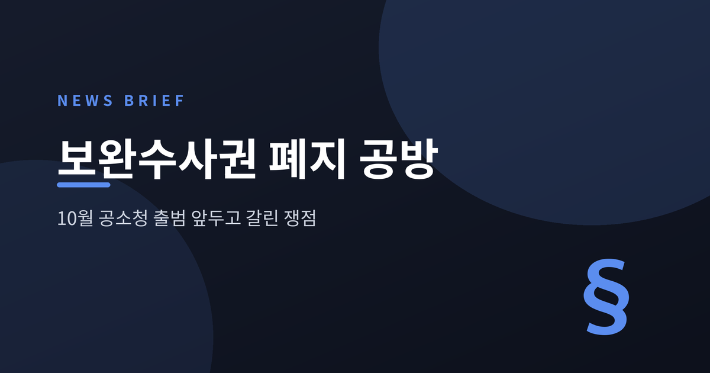
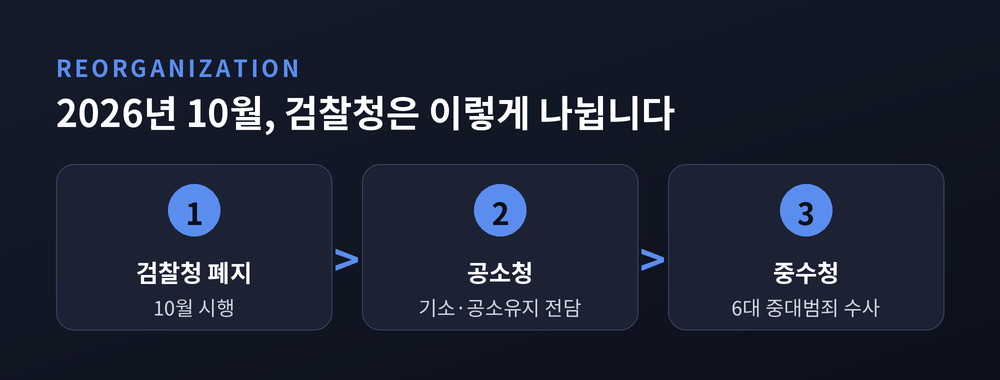
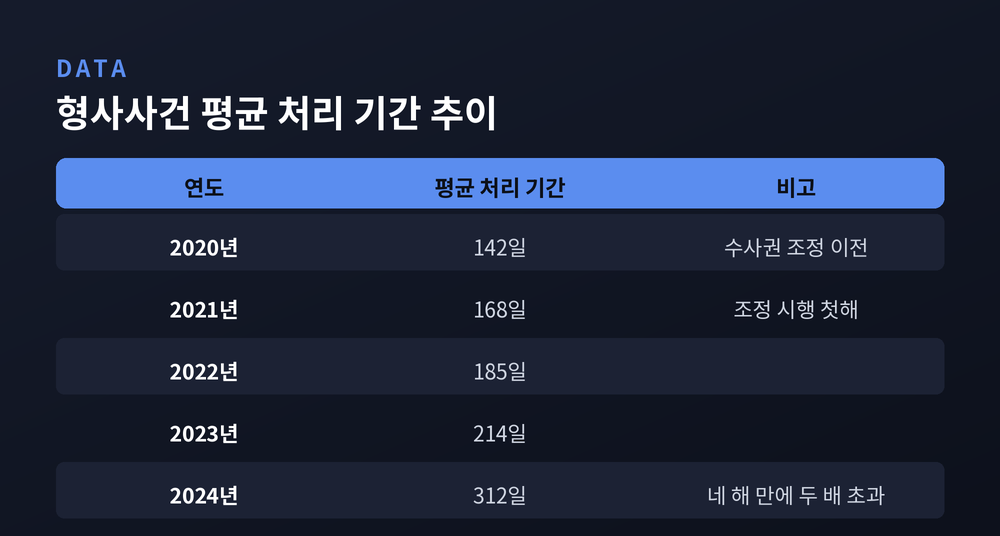
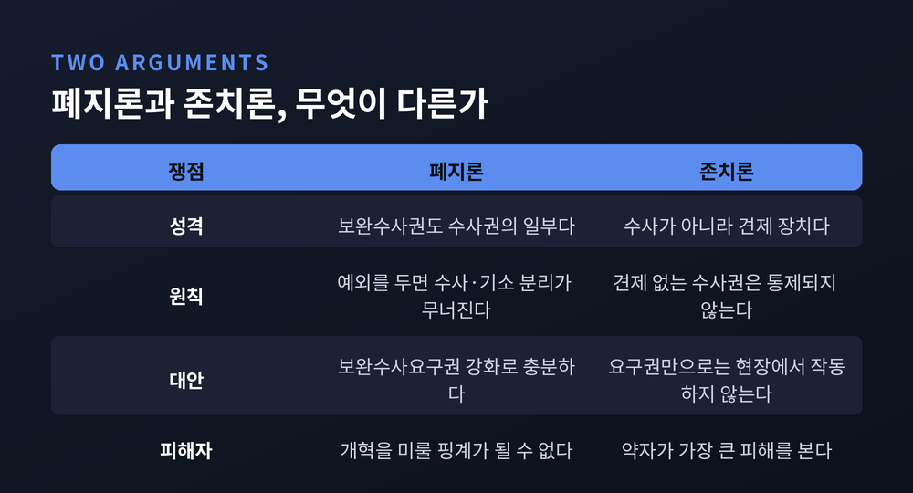
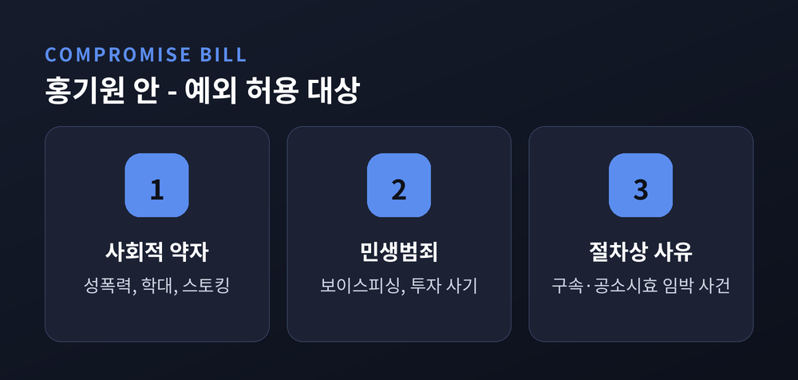

보완수사권 폐지 공방, 10월 공소청 출범 앞두고 무엇이 쟁점인가
이번 글에서는 검찰 보완수사권을 둘러싼 공방을 정리해 보겠습니다.
10월 검찰청 폐지까지 석 달이 채 남지 않았는데, 정작 핵심 권한의 존폐가 아직 정해지지 않았습니다.
어느 편이 옳다고 말하기보다, 양쪽 논거를 나란히 놓는 데 무게를 두었습니다.

무슨 일이 있었나
2026년 10월, 검찰청이 사라집니다.
지난 3월 국회 본회의를 통과한 공소청법과 중대범죄수사청법에 따른 것입니다. 기소와 공소유지만 맡는 공소청이 들어서고, 부패·경제·방위산업·마약·내란외환·사이버범죄 등 6대 중대범죄는 행정안전부 소속 중대범죄수사청이 전담합니다. 수사와 기소를 제도적으로 완전히 분리하겠다는 구상입니다.
그런데 정작 '보완수사권을 남길 것인가'는 아직 결론이 없습니다.
이 권한의 범위는 형사소송법 개정으로 따로 정해야 하는데, 그 입법이 공전하고 있습니다. 파이낸셜뉴스는 지난 6월 23일 "검찰 해체 D-100인데 보완수사가 공전한다"고 전했습니다.
7월 14일 더불어민주당 의원총회는 이 문제를 매듭짓지 못했습니다. 완전 폐지를 당론으로 확정하려 했으나, 당내 신중론에 부딪혀 추가 숙의로 넘어갔습니다.

보완수사권이란 무엇입니까
용어부터 짚고 가겠습니다.
형사소송법 제197조의2가 근거 조문입니다. 검사가 기소 여부를 정하거나 공소를 유지하는 데 필요할 때, 경찰에 보완수사를 요구할 수 있도록 한 규정입니다.
실무에서는 둘을 구분합니다.
- 보완수사권 — 검사가 송치받은 사건을 직접 더 수사하는 권한
- 보완수사요구권 — 검사가 경찰에게 다시 수사하라고 요구하는 권한
이번 다툼의 핵심은 앞의 것을 없애고 뒤의 것만 남길지입니다. 얼핏 사소해 보이지만, 검사가 손수 확인할 수 있느냐 아니면 경찰에 맡기고 기다려야 하느냐의 차이입니다.
2021년 이후 무엇이 달라졌나
지금의 논쟁은 5년 전에서 출발합니다.
2021년 1월 1일, 검경 수사권 조정이 시행됐습니다. 경찰이 1차 수사권과 수사종결권을 갖게 됐고, 검사의 직접 수사는 6대 중대범죄로 좁혀졌습니다. 경찰이 혐의가 없다고 보면 불송치로 자체 종결할 수 있게 됐습니다.
예전엔 검사가 수사를 지휘했습니다. 지금은 경찰이 먼저 수사하고 검사가 뒤에서 점검합니다.
그 사이 몇 가지 수치가 움직였습니다.
대검찰청이 올해 3~4월 전국 12개 검찰청의 송치 사건을 조사한 결과, 5만 5,174건 가운데 2만 5,152건에서 보완수사가 이뤄졌습니다. 비율로 45.59%입니다. 넘어온 사건의 절반 가까이에 검사의 손이 한 번 더 닿았다는 뜻입니다.
형사사건 평균 처리 기간도 늘었습니다. 2020년 142일에서 2021년 168일, 2022년 185일, 2023년 214일을 거쳐 2024년 312일이 됐습니다. 네 해 만에 두 배를 넘겼습니다.
파이낸셜뉴스는 지난 7월 13일 불기소율과 영장 기각률도 올랐다고 단독 보도했습니다. 불기소 처분 비율은 2016~2020년 평균 4.1%에서 2021년 8.0%로, 지난해 9.6%까지 올랐다는 내용입니다.
다만 여기서 한 가지는 분명히 해두겠습니다. 이 변화가 수사권 조정 때문인지에 대해서는 해석이 갈립니다. 숫자는 사실이지만, 원인은 아직 다툼의 영역입니다.

논쟁에 불을 붙인 '장윤기 사건'
한 사건이 논쟁을 재점화했습니다.
경찰은 장윤기를 살인 등 혐의로 송치했습니다. 검찰이 보완수사 과정에서 성범죄 정황을 추가로 확인해 강간 등 살인 혐의를 적용했습니다. 이 과정에서 현직 경찰 간부인 그의 부친이 증거를 인멸한 정황이 드러났고, 담당 수사팀장도 증거인멸 혐의로 긴급체포됐습니다.
존치를 주장하는 쪽은 이 사건을 근거로 듭니다. 보완수사권이 없었다면 실체가 묻혔으리라는 것입니다.
반론도 있습니다. 보완수사요구권만으로도 같은 결과에 이를 수 있었다는 주장입니다. SBS는 취재파일에서 이 논거를 따로 검증했습니다. 방송인 김어준 씨는 "이런 정도의 사건은 1년에 몇 건씩이나 있는데 최근 일주일 사이에 거의 모든 언론에서 톱"이라며 여론몰이를 지적했습니다. 이에 대해 정파적 이익을 위해 비극을 다뤄선 안 된다는 반박도 나왔습니다.
폐지론은 무엇을 말합니까
여당 지도부의 논리는 원칙에 있습니다.
한병도 대표 직무대행 겸 원내대표는 의원총회에서 "보완수사권 완전 폐지를 골자로 하는 형사소송법 개정으로 검찰개혁의 마지막 퍼즐을 완성해야 한다"고 말했습니다.
핵심 논거는 이렇습니다. 보완수사권 역시 수사권의 일부라는 것입니다. 예외를 두기 시작하면 과거 검수완박 입법 때처럼 검찰이 수사권을 다시 넓히게 되고, 결국 수사·기소 분리라는 대원칙이 무너진다는 우려입니다.
대신 부작용은 다른 장치로 막겠다는 구상입니다. 보완수사요구권을 강화해 경찰이 반드시 보완수사에 착수하고 결과를 통보하도록 의무화하고, 원칙적으로 1개월 안에 마치도록 하는 내용입니다. 김한규 원내정책수석부대표는 "경찰의 수사권 남용을 통제하는 방안을 충분히 준비했다"고 밝혔습니다.
정부도 같은 방향입니다. 김민석 국무총리는 지난 6월 25일 보완수사권 폐지를 정부의 기본 입장으로 정리했습니다.
존치론은 무엇을 말합니까
야당은 견제 장치를 이야기합니다.
장동혁 국민의힘 대표는 "검찰 권력까지 경찰에 몰아주면 괴물 경찰이 탄생한다"며 보완수사권을 남겨야 한다고 주장했습니다. 국민의힘은 "보완수사권은 검찰을 위한 제도가 아니라 부실수사를 막을 최소한의 견제장치"라는 입장입니다.
주목할 대목은 피해자를 앞세운 논리입니다. 경찰을 견제할 수단이 없으면, 변호사를 선임하기 어려운 사회적 약자가 가장 큰 피해를 본다는 것입니다. 박성훈 수석대변인은 "결국 이득 보는 것은 정권과 일부 권력자층"이라고 말했습니다.
국민의힘은 보완수사권을 유지하는 형사소송법 개정안을 당론으로 정하고 맞불 입법에 나서기로 했습니다. '부산 돌려차기' 사건 피해자와 토론회를 여는 등 저지에 힘을 싣고 있습니다.

여당 내부는 어디서 갈라졌나
이번 국면의 특징은 여기에 있습니다. 전선이 여야 사이에만 있지 않습니다.
7월 14일 의원총회에서 15명이 발언했고, 그중 10명가량이 전면 폐지에 우려를 나타냈습니다. 박균택·홍기원·이소영·박범계·남인순 의원 등입니다.
민주당 원내대변인의 설명이 구도를 정확히 보여줍니다. "보완수사권을 전면 존치하자는 의견은 당내에 없는데, 예외적으로 허용할지에 대해 몇 개의 의견들이 있는 것 같다."
즉 폐지 자체가 아니라 예외를 둘 것이냐가 쟁점입니다.
홍기원 의원은 7월 14일 절충안을 대표발의했습니다. 직접수사권은 폐지하되, 일부 사건에 한해 보완수사를 허용하자는 형사소송법 개정안입니다.
- 사회적 약자 대상 범죄 — 성폭력, 아동·장애인·노인 학대, 스토킹, 가정폭력
- 민생범죄 — 보이스피싱, 금융투자 사기
- 구속 사건, 공소시효 임박 사건, 피해자 이의신청 사건
남용을 막을 장치도 함께 담았습니다. 별건수사로 번지지 않도록 동일성 원칙을 엄격히 적용하고, 강제수사가 필요하면 지방공소청장의 승인을 받도록 했습니다. 고민정·이소영·박균택 의원 등 10명이 공동발의에 이름을 올렸습니다.
홍 의원은 "단 한 명이라도 억울한 피해자가 생긴다면 성공한 개혁이랄 수 있나"라고 말했습니다.
논의 과정이 순탄하지만은 않습니다. 고민정 의원은 15일 "온갖 험악한 문자가 쏟아진다"며 "문제 제기조차 하지 못하는 공론장은 의미가 없다"고 밝혔습니다.

사법부는 무엇을 말했나
지난 12일, 새로운 목소리가 더해졌습니다.
대법원 법원행정처가 국회에 제출한 검토 의견에서 처음으로 입장을 냈습니다. 김용민·박은정 의원이 공동발의한 형사소송법 개정안에 대한 것입니다.
내용은 신중합니다. 보완수사권 폐지는 "충분한 숙의와 검토를 거쳐 입법 정책적으로 결정할 사항"이라고 했습니다. 국회의 몫으로 남긴 것입니다. 다만 "제도 변화로 인한 부작용을 방지하기 위한 충분한 보완 방안이 함께 마련돼야 한다"고 덧붙였습니다.
어느 편도 들지 않으면서, 보완책은 필요하다고 짚은 셈입니다.
앞으로 무엇을 지켜볼까
일정이 빠듯합니다.
민주당은 이르면 다음 주 형사소송법 전문가를 초청한 정책 의원총회를 엽니다. 법조인 단체와 피해자 지원 단체의 의견도 듣기로 했습니다. 법사위와 행안위에서는 보완책 논의가 진행 중입니다.
세 가지를 눈여겨볼 만합니다.
첫째, 예외 조항의 향방입니다. 홍기원 안이 당론에 반영될지, 아니면 원안대로 완전 폐지로 갈지가 갈림길입니다.
둘째, 보완수사요구권이 실제로 작동할지입니다. 법사위 소속 김남희 의원은 현장에서 이 권한이 잘 작동하지 않는다는 간담회 내용을 전한 바 있습니다.
셋째, 10월 일정입니다. 중수청 직제와 정원은 다음 달까지 확정될 예정이나, 입법이 늦어지면 출범 준비에도 영향이 갈 수 있습니다.
정리하면 이렇습니다.
이 논쟁에는 서로 다른 두 가지 걱정이 맞물려 있습니다. 하나는 수사기관에 권한이 다시 쏠릴 것이라는 걱정입니다. 다른 하나는 견제가 사라진 자리에서 억울한 사람이 생길 것이라는 걱정입니다. 양쪽 모두 근거를 갖고 있고, 어느 쪽도 가볍지 않습니다.
— 제도의 옳고 그름은 결국 그 제도 아래 놓인 사람에게서 드러납니다.
석 달 뒤 무엇이 남을지, 조금 더 지켜볼 일입니다.
참고 소스
- YTN '보완수사권 폐지 충돌..."괴물경찰" vs "검찰개혁"' (2026-07-11)
- 경향신문 '여당서 보완수사권 폐지 우려 분출' (2026-07-14)
- 경향신문 '대법원 법원행정처, 부작용 방지 위한 보완 방안 마련해야' (2026-07-12)
- 서울신문 '법원행정처 檢보완수사권 폐지 보완책 필요' (2026-07-13)
- 파이낸셜뉴스 '與홍기원, 예외적 檢보완수사 허용 법안발의' (2026-07-14)
- 파이낸셜뉴스 '[단독] 불기소율·영장 기각률 치솟는데' (2026-07-13)
- 한국일보 '보완수사권 전면 폐지 급브레이크?' (2026-07-14)
- 세계일보 '檢 송치 사건의 46% 보완수사' (2026-06-01)
- 대한민국 정책브리핑 '검·경 수사권 조정'